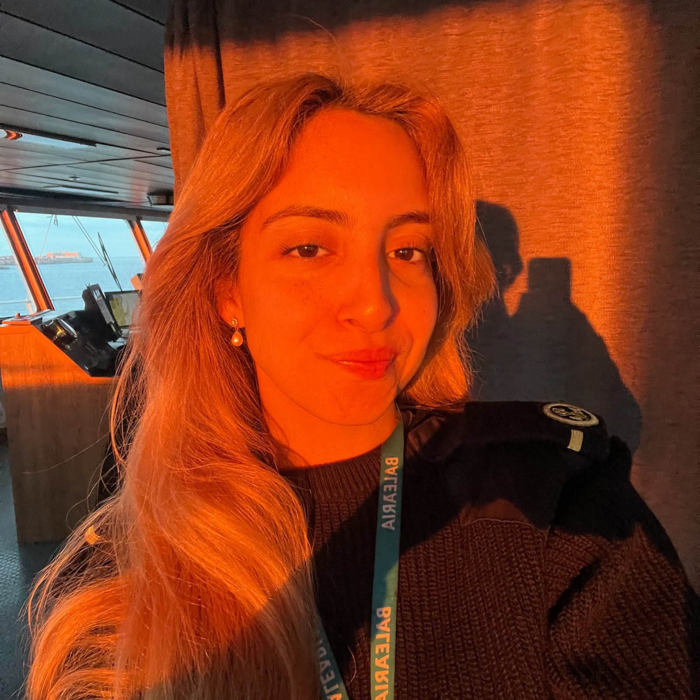
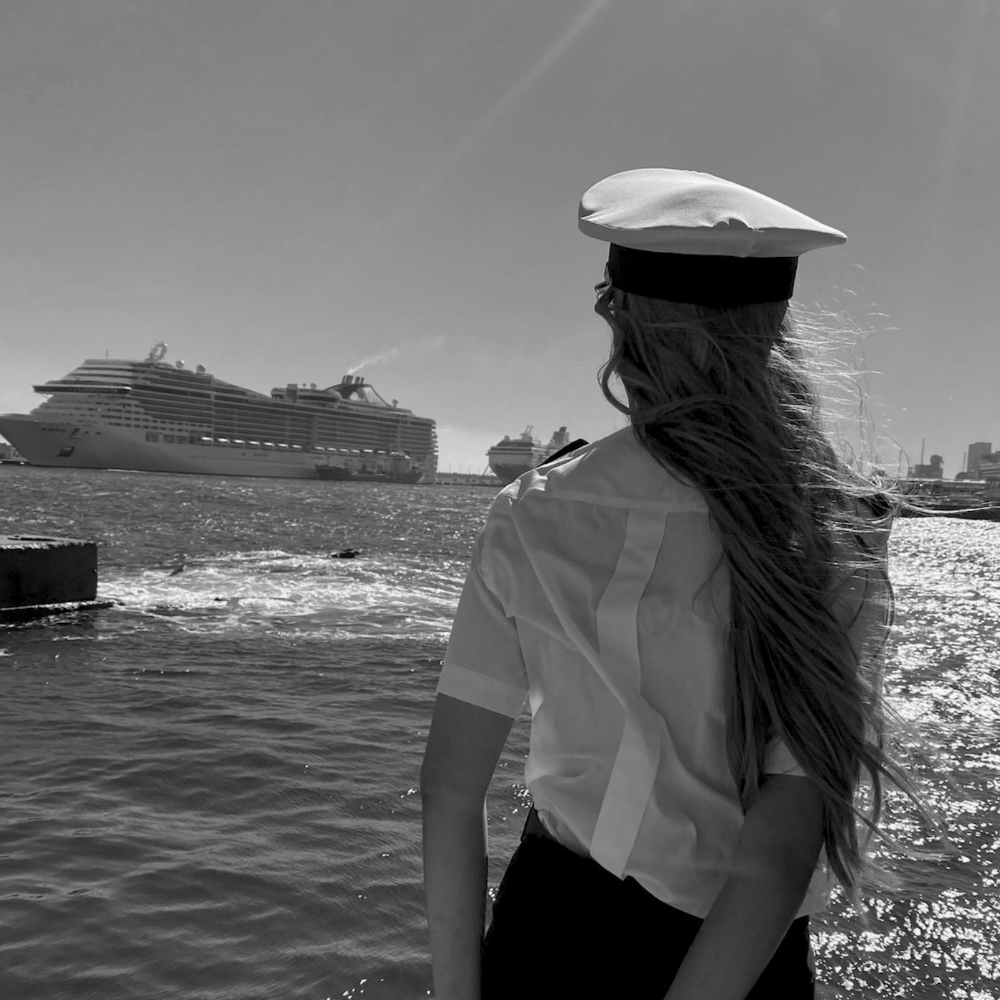
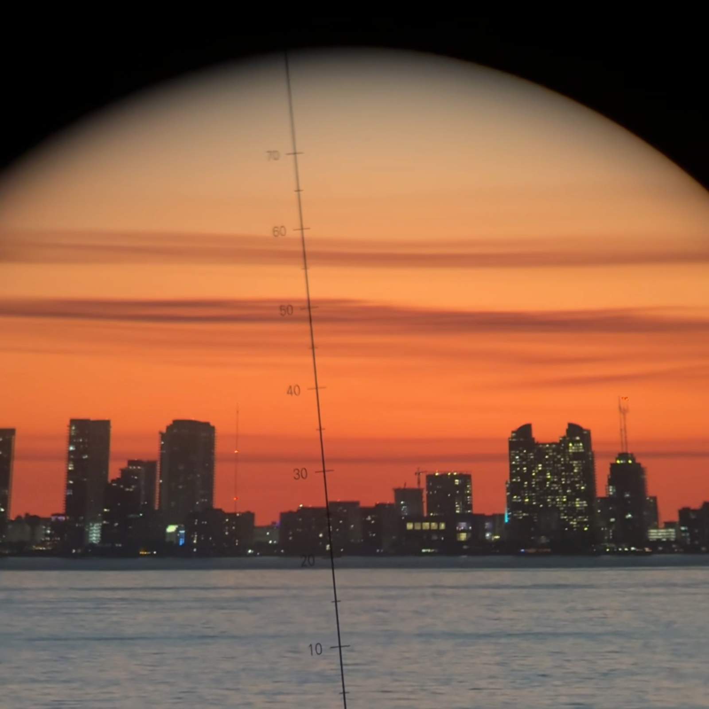
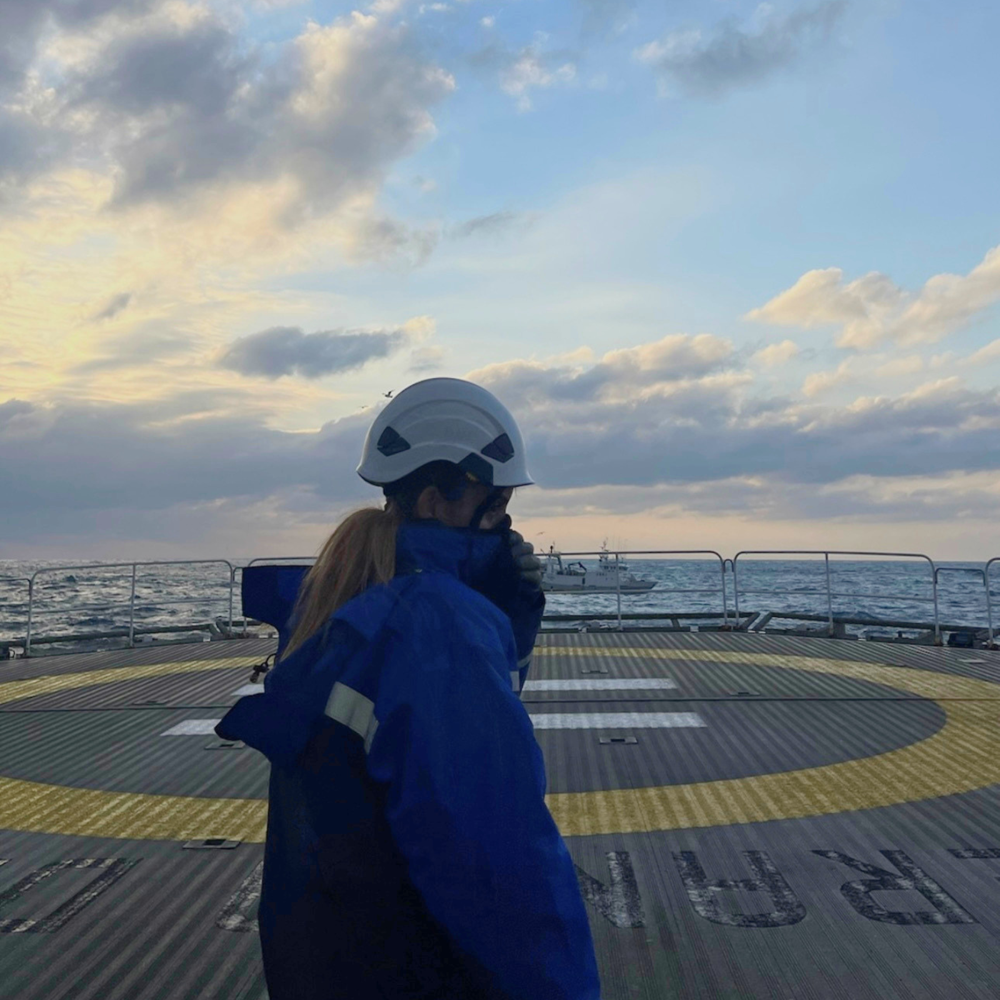

Soy Mery, Piloto de la Marina Mercante y la primera de mi familia en entrar en este sector. Nadie me explicó el camino — lo fui descubriendo a base de errores, un año perdido en burocracia, y aprender sobre la marcha lo que ninguna clase enseña. Hoy comparto lo que a mí me hubiera ahorrado ese año, para que tú no tengas que perderlo.

Esta idea no nació de una familia de navegantes. Nació de todo lo contrario: una familia donde nadie salía de su zona de confort, donde no había industria, ni conocimiento, ni referentes de este mundo. A mi hermano mayor tampoco le aconsejó nadie, estudió una carrera para acabar en una oficina, sin haber tenido otra opción sobre la mesa. Pero fue él quien un día me habló de la marina mercante. Sin saberlo, me abrió una puerta que él nunca tuvo. Si no fuera por él, hoy no estaría donde estoy.

Empecé desde cero, sin saber nada de este mundo. Por el camino sumé países nuevos cada pocos días, mares distintos, culturas que cambian de puerto en puerto y guardias que te enseñan a estar despierta cuando el cuerpo pide lo contrario. Aprendí idiomas a base de necesitarlos, aprendí a moverme en un mundo que no fue pensado para mí, y aprendí, sobre todo, a mirar distinto: donde antes solo veía un mar azul, ahora veo el sacrificio de quien trabaja en él.

No hay una saga familiar detrás de esto, ni generaciones de navegantes que me hayan enseñado el oficio antes de tiempo. Hay algo distinto: un título real de Piloto y Oficial de Puente, guardias reales de madrugada, y años entendiendo una normativa que muchos explican mal o directamente no explican. Todo lo que cuento aquí tiene detrás una titulación oficial y horas reales de guardia — es lo que exige la ley, y es lo que se vive de verdad a bordo. Nadie lo firma por mí. Lo firmo yo, con lo que he navegado. No necesito una generación detrás. La generación empieza aquí.

Todo lo que cuento aquí se apoya en normativa real —STCW, RD 269/2022, la letra exacta de lo que exige la DGMM— y en guardias reales a bordo, no en intuición ni en lo que se dice por redes. Cuando hablo de cómo entrar en este sector, hablo desde dentro: desde el título, desde el puente de mando, desde haberlo vivido.
La técnica te lleva hasta el puente de mando; la comunidad te sostiene cuando el camino pesa y nadie a tu alrededor entiende por lo que estás pasando. Construyo esto para que la próxima mujer que quiera hacer esto tenga a alguien a quien preguntar, y no tenga que abrirse camino completamente sola, como me pasó a mí.
Entrar en un mundo que no fue pensado para ti no es un detalle, es el primer paso, y el más difícil. Yo lo di sola, sin nadie en mi familia que me enseñara el camino, a base de errores y de aprender sobre la marcha lo que ninguna clase enseña. Hoy sigo aquí, y quiero que la próxima no tenga que hacerlo sola como yo.
Isabel Barreto fue la primera almirante de la historia. A ella tampoco le enseñó nadie el camino. Han pasado más de 400 años y las mujeres seguimos siendo pocas en el mar. Quiero construir el espacio que a mí me hubiera gustado tener: uno donde la próxima no tenga que abrirlo sola.
Yo perdí un año a base de errores. Tú no tienes por qué. Todo lo que aprendí está en la guía.
Conseguir la guíaAcceso inmediato · Guía en PDF